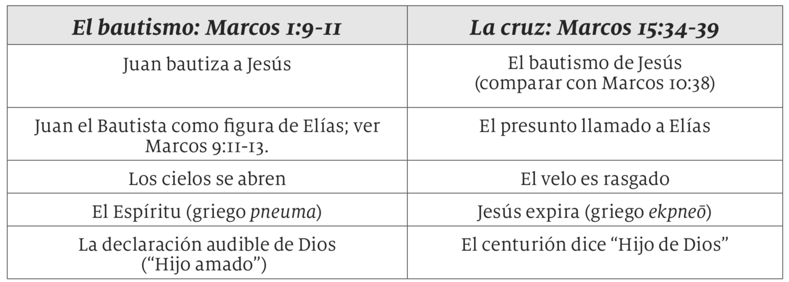

18 de septiembre de 2024
Lee Marcos 15:33 al 41. ¿Cuáles son las únicas palabras de Jesús en la cruz que aparecen en Marcos? ¿Qué significa en última instancia la muerte de Cristo para todos nosotros?
Una oscuridad sobrenatural descendió sobre el Calvario desde aproximadamente el mediodía hasta las 3 de la tarde. “Cuando llegó la hora sexta (el mediodía), hubo tinieblas sobre toda la tierra hasta la hora novena (las 3 de la tarde)” (Mar. 15:33).
Las palabras de Cristo en la cruz, cuando clama a Dios preguntándole por qué lo ha abandonado, son llamadas “el grito de desamparo”. Él está citando Salmos 22:1. Otras referencias al mismo salmo aparecen en Marcos 15:24 y 29, indicando que las Escrituras se están cumpliendo en la muerte de Jesús. Aun en la malvada confabulación de los hombres, la voluntad de Dios está siendo cumplida.
Las palabras de Jesús desde la cruz son reportadas en arameo juntamente con su traducción. La expresión original traducida como “Dios mío, Dios mío” es Eloi, Eloi (transliteración del arameo ´elahi). Pudo haber parecido a los allí presentes que Jesús llamaba a Elías (´eliyyah en arameo, que significa “mi Dios es YHWH”). Ese fue precisamente el error que algunos de ellos cometieron.
Lo que resulta sorprendente acerca de este pasaje es su paralelismo con el bautismo de Jesús en Marcos 1:9 al 11.
Lo que estos paralelos sugieren es que así como el bautismo de Jesús en Marcos 1 es el comienzo de su ministerio, como fue profetizado en Daniel 9:24 al 27, lo que ocurre en la cruz, según Marcos 15, es la culminación u objetivo de su ministerio, al morir como rescate en favor de muchos (Mar. 10:45). La muerte de Jesús en la cruz también cumple parte de la profecía de Daniel 9:24 al 27. La rasgadura del velo del Templo (Mar. 15:38) apunta al cumplimiento del sistema sacrificial, cuando el tipo, o símbolo, se encuentra con el antitipo, o realidad simbolizada, y una nueva fase de la historia de la salvación comienza.
A pesar de la malvada confabulación humana, los propósitos de Dios se cumplieron. ¿Por qué debería esto ayudarnos a comprender que, sin importar lo que ocurra a nuestro alrededor, podemos aún confiar en Dios y saber que su bondad prevalecerá finalmente?